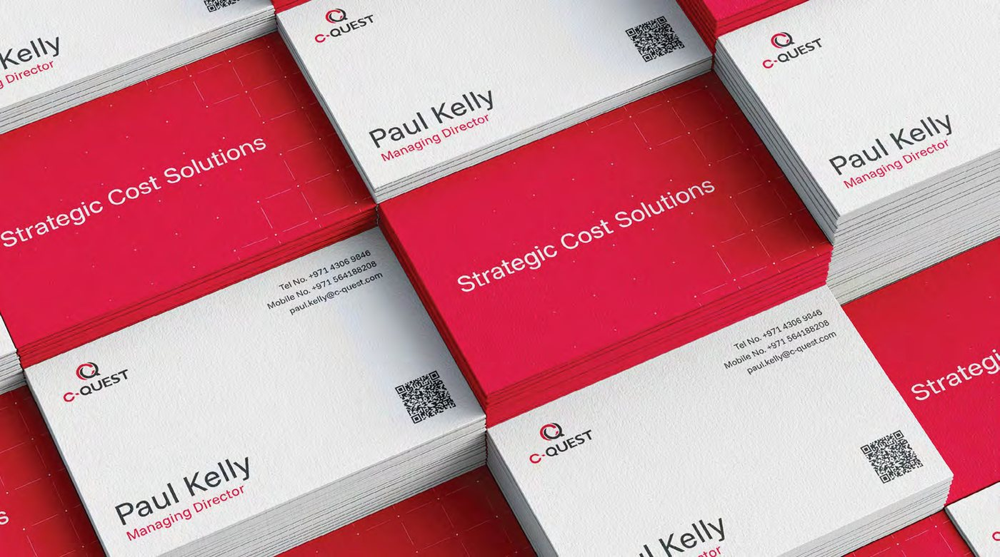
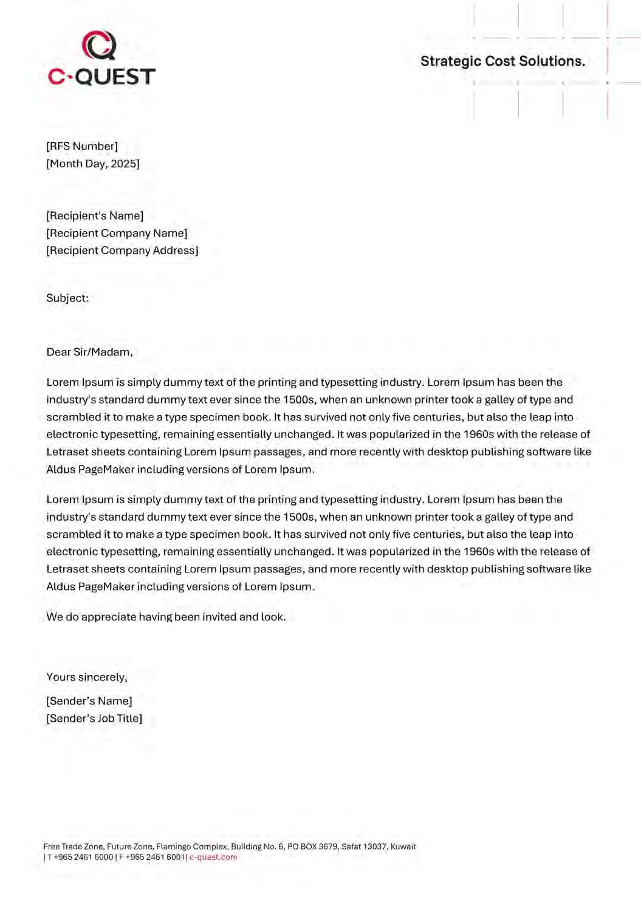
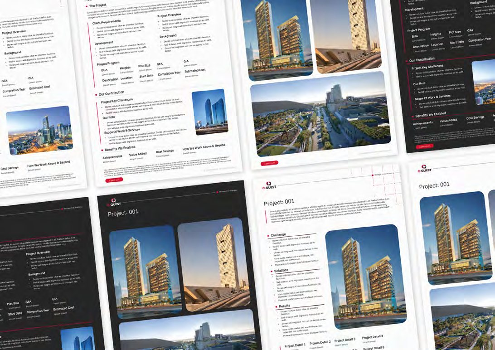
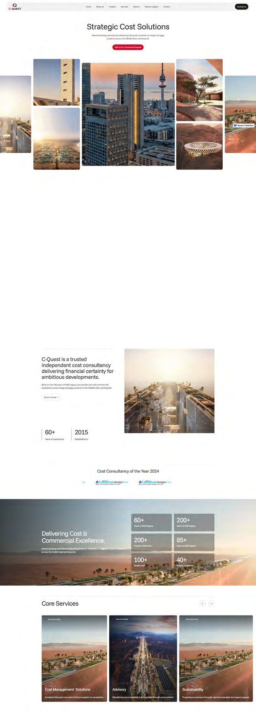
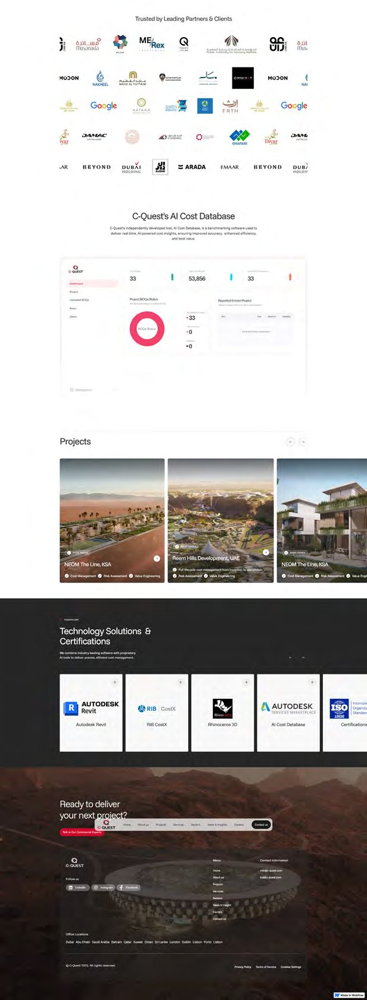
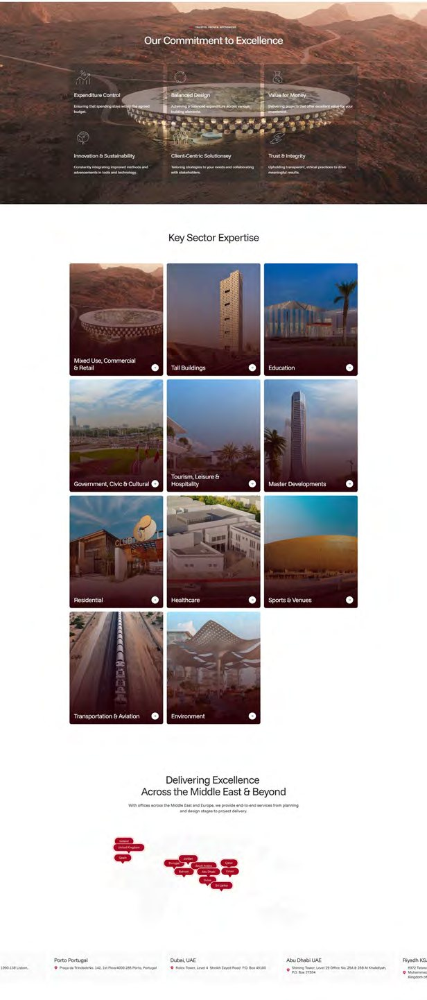

C-Quest
An independent brand for a respected name inside the KEO Group.
C-Quest is a cost consultancy working on mega and giga projects across the Middle East. Established in 2015 and built on more than 60 years of expertise inside the KEO Group, it had grown into one of the most respected names in its field, and was named Cost Consultant of the Year in 2024. The brand had not kept pace. It still read as a department of its parent rather than the independent firm C-Quest had become.
The Challenge
Award-winning work, a brand that read like a subsidiary.
C-Quest was known for delivery, not for a presence of its own. The identity and communications were fragmented, the online footprint was thin, and nothing in the brand signalled the scale, independence or confidence of the business. A firm winning national awards was introducing itself with materials that undersold it.
The Brief
An independent position, and a system the team could run.
Three things had to be true. C-Quest needed a clear, independent position within the KEO Group. The visual and verbal identity had to read as modern and regionally relevant without discarding the legacy it was built on. And the assets had to be ones the internal team could use and maintain with confidence, not files that aged the moment we left.
Strategic Foundation
Precision, transparency and collaboration, made into a brand.
We set the position first: the leading independent cost consultancy, trusted to deliver financial certainty on the most ambitious developments. From there the brand ran on three principles the firm already lived by, precision, transparency and collaboration, carried in one line the whole business could stand behind. Strategic Cost Solutions.
What We Inherited
A respected firm, hidden behind a generic brand.
C-Quest was winning the work and the awards. The brand was doing none of that work. The old site and materials looked like any other cost consultancy, with no position to hold and nothing that signalled the scale of the projects behind the name.

Precision, Proven
We tested the identity instead of defending it.
Precision is the idea the whole brand turns on, so we held the identity to the same standard. The pattern that runs through the system was put through heatmap and contrast-grid testing at two strengths. At full strength it fought the content and clarity scored 56. Pulled back to a quarter, clarity rose to 63 with focus unchanged. The call was made on evidence, not preference.


The Identity, Applied
Built to be used, not admired.
A brand only earns its keep when it survives contact with the real world: a card handed across a table, a letter, a proposal, a hoarding. Every touchpoint carries the same logic, so the firm reads as one confident operation wherever it appears.



A Platform To Scale
The brand, online.
The new website turns the system into a clean, modular platform that holds up as C-Quest grows, from the homepage to deep project and sector pages.




Out In The World
Brand at the scale of the work.
C-Quest works on mega and giga projects. The brand had to read at that size, on hoardings, signage and environments, without losing the precision that defines it.


Social And Activation
Consistent down to a single post.
An editable social and activation kit lets the marketing team run the brand day to day, holding the same standard at the smallest size it will ever appear.


The Visual Language
Real scale, real people.
Two image rules carry the brand. Projects are framed for form, geometry and light. People are shot natural and unposed. Serious and human inside one system.


The Result
From a name inside KEO to a brand that leads.
C-Quest now introduces itself with the confidence its work always deserved. One system, owned by the team, consistent across every channel, and finally the equal of the projects it stands behind.

It is a million times better than our current website.
Where does your brand sit against the business?
Every engagement starts with the Brand Alignment Diagnostic, a fixed first step that scores your brand against the business and shows what to fix first.